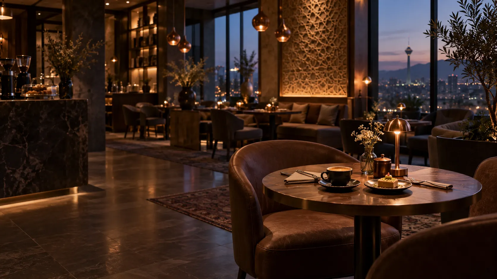

نمای سهبعدی روی این دستگاه باز نشد؛ میز را از فهرست انتخاب کنید.
ممیزو
آزادرزرو شدهنامناسب
روز، ساعت و تعداد نفرات را انتخاب کنید، بعد روی یک میز سبز بزنید

میزو · رزرو آنلاین میز کافهها
میزت منتظرته.
برای یک قرار دو نفره یا دورهمی دوستانه، بهترین میز کافه را در کمتر از یک دقیقه انتخاب کن.
بدون کمیسیونرزرو مستقیم با خود کافه
تأیید فوریپیام تأیید همان لحظه
انتخاب واقعی میزهمان جایی که دوست داری